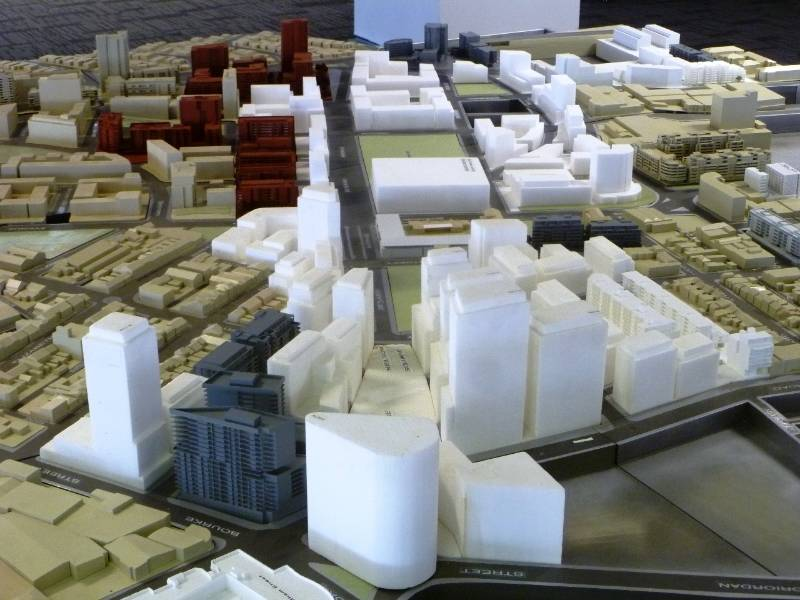
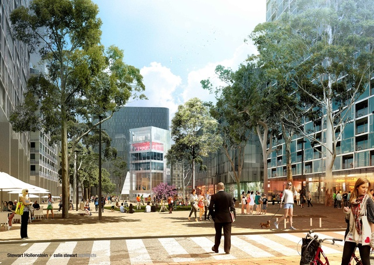
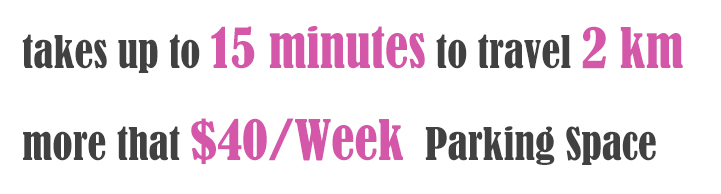

Urban Transformation
code1230 assignment 1
NO.1
Defination
Urban transformation can refer to planning theory changes in each period and the approach to urban. Especially the improvement and replacement of buildings in a city, each of urban transformation plan has advantages and drawbacks.

Green Square
Sydney
Purpose
Green Square was the oldest industrial heartland in Sydney, which is transforming into a vibrant, sustainable and connected community. This area closes to the airport and city Centre, connected by rail, bus and cycle way.
- impact
- drawback
1111
Green Square Planning began in 1997, start construction in 2012. This Planning will build around 30,500 new residential dwellings. Provided facilities a growing community needs, such as a new shopping Centre new aquatic Centre, a child care Centre, a Plaza included library and Diet Center. The space of Plaza will have capacity for up to 4,000 revelers in New Year's Eve(Cheng,2016).
1111111
Green Square Plan provide housing and workplaces for a growing population while ensuring development is sustainable, and respectful of existing neighborhoods. Green Square is one of the fastest growing areas in Sydney and one of our most diverse. "The history of the area and how we have kept some of it. This is what makes Waterloo and Green Square unique." - City of Sydney Resident Consultations.In addition, The Government has already invested more than $40m to secure land, ready for light rail. This light rail will connect with Sydney Train, increase the efficiency of the trip from Green Square to central Sydney and Airport. The Government also planned cycle-way to avoid trafficking jams.
11111111111
111
With the development of Green Square, there are some issues cannot be resolved. According to The Sydney Morning Herald, about 120 filled buses run through Green Square in peak hours and takes up to 15 minutes to travel 2 km from Zetland to Bourke St. On the other hand, because residential densities increase, the price of Parking space also increased, and a significant number of citizens cannot find Parking Space in this Space.
